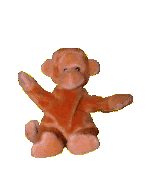
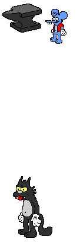

This is a special place where I have put pretty pictures and stuff that we both like
The X-Files
here we are, the thing that in many ways is responsible for us
I dont think either of us will forget how I wowed you with my personal website and updating it with the dana scully section

or after our first date when I did not last more than 10 mins into an episode as I layed down with you for the first time before asking :
"Why have you not kissed me yet‽"

I love as much as there is sexual tension between Mulder and Scully
Name: Dana Katherine Scully M.D.
FBI Title: Special Agent Dana Scully
FBI Section Of Assignment: The X-Files
Date Of Birth: Feburary 23, 1964
Height: 5'3"
Weight: If you know that YOU should be the special agent!
Hair Color: Aubrun
Eyes: Blue, though they sometimes appear green.
Marital Status: Single
Address: 3170 W., 53rd Road, #35, Annapolis, MD
Telephone: (202) 555-6431 (home), 555-3564 (cellular)
E-Mail : D_Scully@FBI.gov
Dana Scully is a babe, and you get annoyed when I say it when we watch x files but you are my babe and I love you
can you probe me like an alien please ?
Cute Stuff
I know you love monkies so here is one for you, he is doing his best at the lil wave that I give to you at some times
he is also a beanie baby which I know you love so much <3

Cats Stuff
We both have a lot of cats in our lives, but one takes a certain number one spot for you

I will never forget the look on your face and how child like and exictable you where when I saw you interact with hello kitty mechandise for the first time.
- Hello Kitty was created by Yuko Shimizu and first appeared in 1974.
- Her full name is Kitty White, and she lives in London, England.
- Hello Kitty is a perpetual third-grader who loves baking cookies and making friends.
- She has a twin sister named Mimmy, who wears a yellow bow on her right ear.
- Hello Kitty's favorite food is her mother's homemade apple pie.
- Despite popular belief, Hello Kitty is not a cat but a little girl with a cat-like appearance.
- she is only 5 apples tall and weighs the same as 3 apples.

The Simpsons
recently we have started to watch the simpsons a lot, which is very nice as I have not seen it in ages and I find it very comfy as well as putting me into a nice nostalgic frame of mind.
I always think of being in tallaght with my granny watching reruns of the simpsons when I watch it with you.
plus its pretty funny
Remeber when I cried watching the episode where they get santa's little helper ?
that is how I feel about you !
WARNING
do not click this button unless you want to see some after dark pictures...
This is how I imagine you are when you are missing me